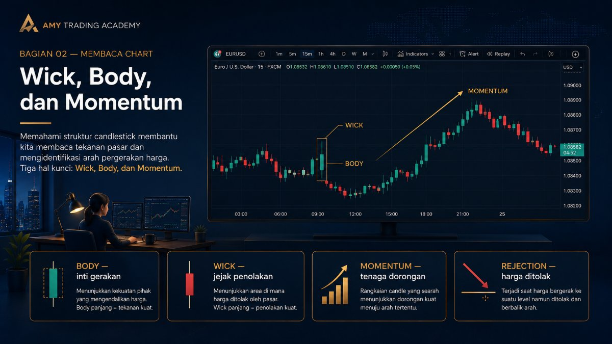
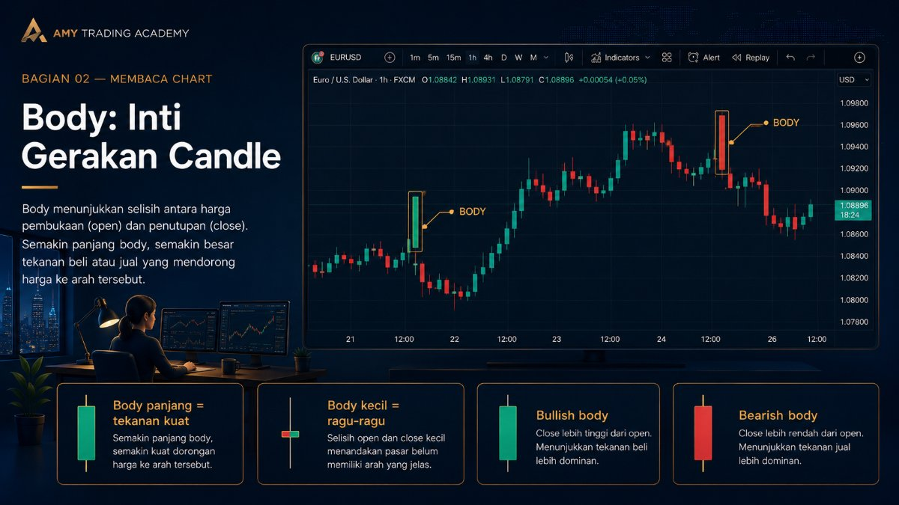
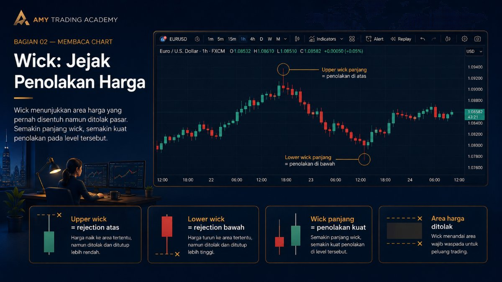
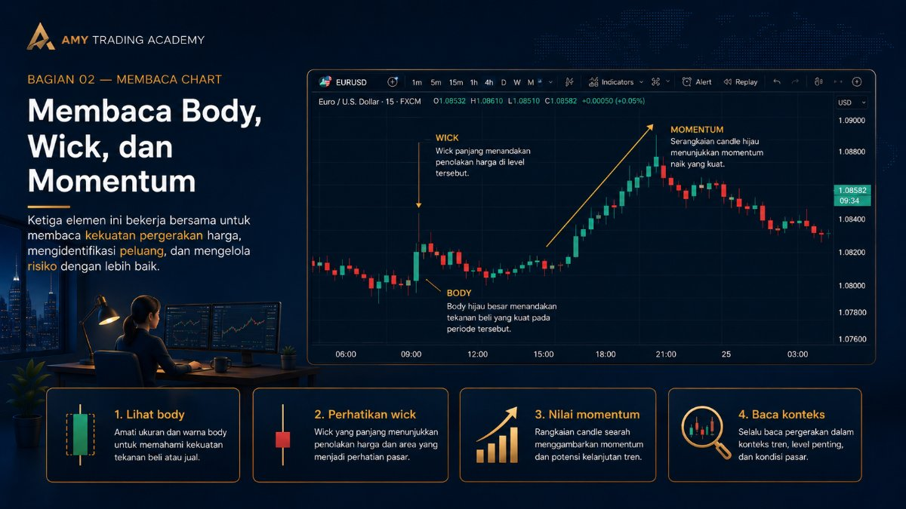
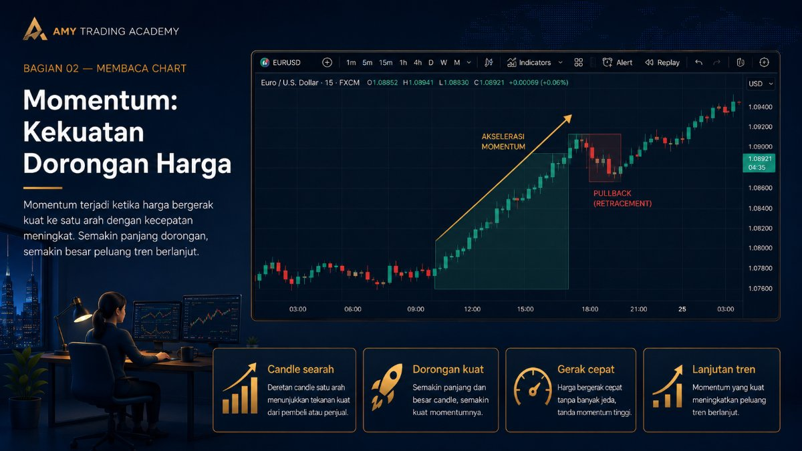

Wick, Body, dan Momentum

Setelah kita tahu bahwa candle punya warna (Bullish dan Bearish) serta elemen dasar (Open, High, Low, Close), sekarang saatnya kita belajar membaca "nada suara" dari candle tersebut. Apakah pasarnya sedang berteriak penuh semangat? Ataukah pasarnya sedang berbisik ragu-ragu?
Untuk mengetahui hal itu, kita menggunakan konsep Momentum. Momentum adalah seberapa kuat dorongan harga ke satu arah tertentu. Di dalam chart, momentum ini bisa kita baca dengan mudah lewat perbandingan ukuran antara Body (Badan) dan Wick (Sumbu) sebuah candle.
Body = Gas (Kekuatan & Dominasi)

Coba bayangkan kamu sedang mengendarai mobil di jalan tol. Body candle itu ibarat pedal gas. Semakin besar dan tebal body-nya, berarti semakin dalam gasnya diinjak.
- Body Tebal Tanpa Wick (Marubozu): Jika kamu melihat candle hijau yang sangat besar, panjang, dan hampir tidak punya sumbu (wick), itu artinya Buyer sedang gas pol! Mereka mendominasi 100% dari awal sampai akhir sesi tanpa perlawanan sama sekali dari Seller. Momentumnya sangat kuat.
- Body Kecil (Spinning Top / Doji): Kalau candle-nya cuma punya body yang tipis seperti garis, itu ibarat mobil yang gasnya cuma diinjak setengah, lalu direm lagi. Ini menunjukkan bahwa pasar sedang ragu-ragu, bingung (indecision), atau sedang istirahat. Kekuatan Buyer dan Seller seimbang.
Aturan Emas: Candle dengan body besar yang searah dengan trend utama adalah konfirmasi yang bagus bahwa trend tersebut masih kuat dan layak untuk kita ikuti.
Wick = Rem (Penolakan / Rejection)

Jika body adalah gas, maka Wick (Sumbu) adalah pedal rem atau tembok penolakan. Sumbu menceritakan jejak sejauh mana harga sempat pergi sebelum akhirnya dipukul mundur oleh pihak lawan.
Mari kita gunakan analogi penjaga benteng:
- Wick Panjang di Atas: Bayangkan pasukan Buyer (Bull) berusaha mendobrak naik. Mereka sempat berhasil menembus ke atas (High). Tapi tiba-tiba pasukan Seller (Bear) yang berjaga di atas langsung menyerang balik dengan kekuatan penuh, memukul mundur Buyer sampai ke bawah lagi. Jejak kegagalan Buyer ini tertinggal sebagai Upper Wick yang panjang. Ini pertanda kuat adanya tekanan jual!
- Wick Panjang di Bawah: Sebaliknya, pasukan Seller berusaha menekan harga jatuh dalam-dalam (Low). Tapi di bawah sana, sudah banyak Buyer yang menunggu dan langsung memborong (buy) secara agresif, mengangkat harga kembali naik. Hasilnya adalah Lower Wick yang panjang (seperti ekor panjang di bawah). Ini pertanda penolakan harga untuk turun lebih lanjut.
Membaca Cerita Gabungan: Body + Wick

Sekarang, mari kita gabungkan keduanya. Apa yang terjadi kalau kamu melihat sebuah candle yang awalnya berwarna merah pekat turun ke bawah, tapi tiba-tiba di akhir sesi harga ditarik naik drastis sampai body merahnya habis, dan berubah menjadi body hijau kecil dengan sumbu panjang di bawah (sering disebut Hammer atau Pinbar)?
Membaca Ceritanya: Awalnya Seller sangat percaya diri menekan gas ke bawah. Namun, mereka menabrak "tembok" berupa kerumunan Buyer besar. Buyer tidak hanya menghentikan penurunan (mengerem), tapi juga membalikkan keadaan (mengegas balik) sampai Seller kalah telak.
Ini adalah sinyal Rejection yang sangat berharga. Sumbu panjang menceritakan rasa sakit pihak yang kalah. Semakin panjang sumbunya, semakin kuat penolakan yang terjadi di area tersebut.
Jangan Terjebak Penampilan Luar

Perhatian: Jangan cuma menghafal bentuk candle (seperti Doji, Hammer, Engulfing). Hafalkan konsepnya.
Banyak trader pemula sibuk menghafal puluhan nama pola candlestick berbahasa Jepang yang rumit. Padahal, inti dari semuanya cuma satu: Siapa yang sedang menguasai pasar saat ini, dan di mana mereka mendapat perlawanan?
Dengan memahami interaksi antara ketebalan Body (Momentum) dan panjangnya Wick (Rejection), kamu tidak perlu lagi menghafal nama-nama pola. Matamu akan secara otomatis bisa membaca drama pertempuran yang disajikan oleh setiap candlestick. Di bab berikutnya, kita akan belajar bagaimana cerita dari candle ini berubah wujud ketika kita melihatnya dari "kacamata" waktu yang berbeda (Timeframe).